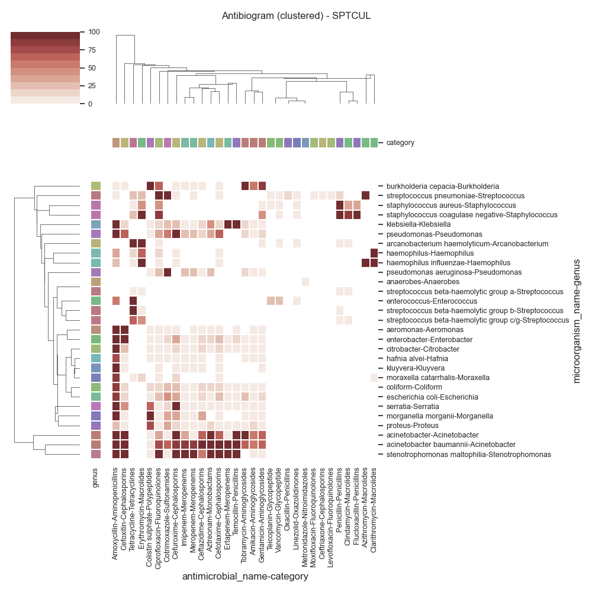
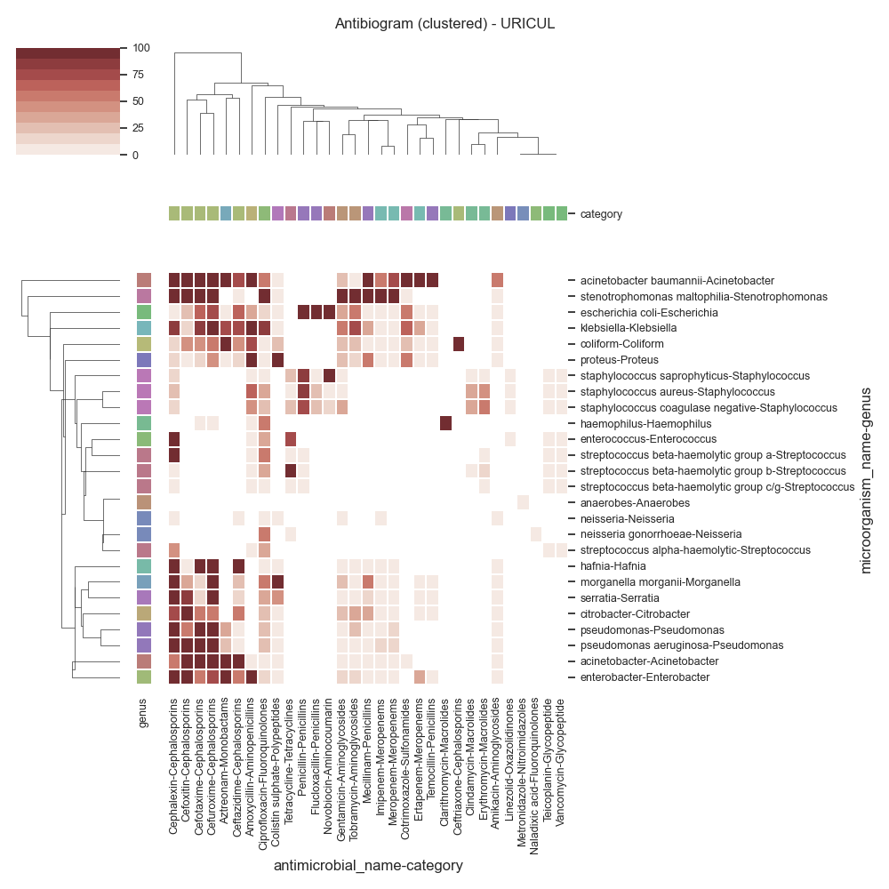
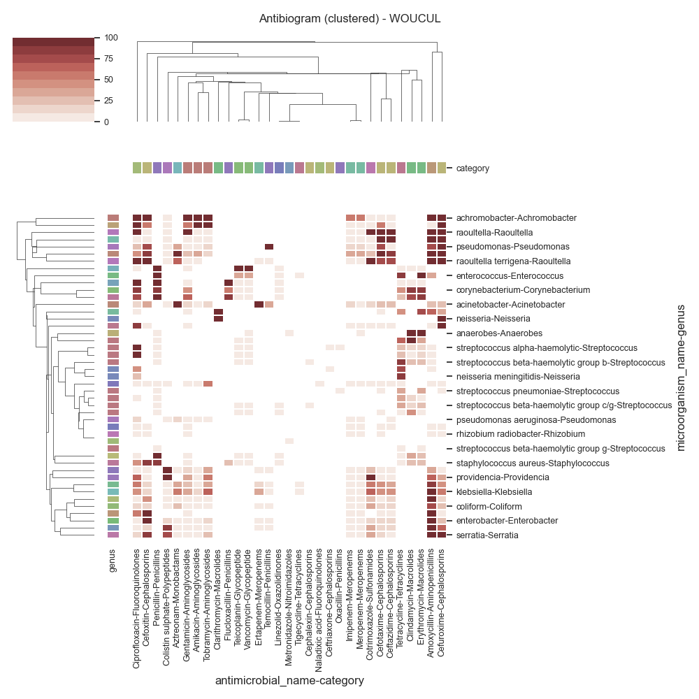

Note
Click here to download the full example code
SARI - Clustermap (by specimen)
Todo
Explain…
- 
- 
- 
Data:
date_received date_outcome patient_id laboratory_number specimen_code specimen_name specimen_description ... microorganism_name antimicrobial_code antimicrobial_name sensitivity_method sensitivity mic reported
0 2009-01-03 NaN 20091 X428501 BLDCUL NaN blood ... klebsiella AAMI amikacin NaN sensitive NaN NaN
1 2009-01-03 NaN 20091 X428501 BLDCUL NaN blood ... klebsiella AAMO amoxycillin NaN resistant NaN NaN
2 2009-01-03 NaN 20091 X428501 BLDCUL NaN blood ... klebsiella AAUG augmentin NaN sensitive NaN NaN
3 2009-01-03 NaN 20091 X428501 BLDCUL NaN blood ... klebsiella AAZT aztreonam NaN sensitive NaN NaN
4 2009-01-03 NaN 20091 X428501 BLDCUL NaN blood ... klebsiella ACAZ ceftazidime NaN sensitive NaN NaN
... ... ... ... ... ... ... ... ... ... ... ... ... ... .. ...
319117 2009-12-31 NaN 24645 H2012337 BLDCUL NaN blood ... enterococcus AAMO amoxycillin NaN sensitive NaN NaN
319118 2009-12-31 NaN 24645 H2012337 BLDCUL NaN blood ... enterococcus ALIN linezolid NaN sensitive NaN NaN
319119 2009-12-31 NaN 24645 H2012337 BLDCUL NaN blood ... enterococcus ASYN synercid NaN resistant NaN NaN
319120 2009-12-31 NaN 24645 H2012337 BLDCUL NaN blood ... enterococcus ATEI teicoplanin NaN sensitive NaN NaN
319121 2009-12-31 NaN 24645 H2012337 BLDCUL NaN blood ... enterococcus AVAN vancomycin NaN sensitive NaN NaN
[319122 rows x 15 columns]
Columns:
Index(['date_received', 'date_outcome', 'patient_id', 'laboratory_number', 'specimen_code', 'specimen_name', 'specimen_description', 'microorganism_code', 'microorganism_name', 'antimicrobial_code', 'antimicrobial_name', 'sensitivity_method', 'sensitivity', 'mic', 'reported'], dtype='object')
SARI (overall):
intermediate resistant sensitive freq sari
specimen_code microorganism_name antimicrobial_name
BFLCUL anaerobes metronidazole 0.0 0.0 1.0 1.0 0.0000
bacillus ciprofloxacin 0.0 0.0 1.0 1.0 0.0000
clindamycin 0.0 3.0 1.0 4.0 0.7500
erythromycin 0.0 1.0 3.0 4.0 0.2500
fusidic acid 0.0 3.0 1.0 4.0 0.7500
... ... ... ... ... ...
XINCUL streptococcus beta-haemolytic group b cephalexin 0.0 1.0 0.0 1.0 1.0000
clindamycin 0.0 1.0 8.0 9.0 0.1111
erythromycin 0.0 1.0 8.0 9.0 0.1111
penicillin 0.0 0.0 9.0 9.0 0.0000
tetracycline 0.0 8.0 1.0 9.0 0.8889
[4491 rows x 5 columns]
specimen_code object
microorganism_name object
antimicrobial_name object
intermediate float64
resistant float64
sensitive float64
freq float64
sari float64
genus object
species object
domain object
phylum object
class object
order object
family object
acronym_x object
gram_stain object
exists_in_registry bool
name object
category object
acronym_y object
dtype: object
Cultures:
specimen_code
URICUL 116627.0
WOUCUL 94918.0
XINCUL 21427.0
SPTCUL 21113.0
BLDCUL 20333.0
ENTCUL 13110.0
T&FCUL 8150.0
MRSCUL 7865.0
VAGCUL 7425.0
EYECUL 2839.0
GUMCUL 1634.0
FAECUL 1317.0
URECUL 802.0
TISCUL 474.0
BFLCUL 450.0
SEMCUL 290.0
NEOCUL 213.0
PDFCUL 68.0
CSFCUL 32.0
RGNS 20.0
FUNSTC 14.0
TBCUL 1.0
Name: freq, dtype: float64
Data (BLDCUL)
antimicrobial_name Amikacin Amoxycillin Aztreonam Cefotaxime Cefoxitin ... Temocillin Tetracycline Tigecycline Tobramycin Vancomycin
category Aminoglycosides Aminopenicillins Monobactams Cephalosporins Cephalosporins ... Penicillins Tetracyclines Tetracyclines Aminoglycosides Glycopeptide
microorganism_name genus ...
achromobacter Achromobacter 0 0 0 0 0 ... 0 0 0 0 0
achromobacter xylosoxidans Achromobacter 100 100 100 100 100 ... 0 0 0 100 0
acinetobacter Acinetobacter 10 6 87 33 33 ... 80 0 0 25 0
acinetobacter baumannii Acinetobacter 14 77 100 77 77 ... 100 0 0 0 0
aerococcus Aerococcus 0 0 0 0 0 ... 0 0 0 0 0
aeromonas Aeromonas 0 100 0 0 0 ... 0 0 0 0 0
anaerobes Anaerobes 0 0 0 0 0 ... 0 0 0 0 0
bacillus Bacillus 0 0 100 0 0 ... 0 0 0 0 0
burkholderia cepacia Burkholderia 0 100 0 0 100 ... 0 0 0 0 0
campylobacter Campylobacter 0 0 0 0 0 ... 0 100 0 0 0
chryseobacterium Chryseobacterium 0 100 100 100 100 ... 100 0 0 0 0
citrobacter Citrobacter 33 100 50 40 40 ... 0 0 0 50 0
coliform Coliform 0 100 25 25 18 ... 28 0 0 0 0
comamonas testosteroni Comamonas 0 0 0 0 0 ... 0 0 0 0 0
corynebacterium Corynebacterium 0 0 0 0 0 ... 0 12 0 0 0
enterobacter Enterobacter 0 96 15 32 90 ... 0 0 0 15 0
enterococcus Enterococcus 0 60 0 100 0 ... 0 75 0 0 35
escherichia coli Escherichia 4 76 25 23 12 ... 0 0 0 72 0
gemella morbillorum Gemella 0 0 0 0 0 ... 0 0 0 0 0
haemophilus Haemophilus 0 50 0 0 0 ... 0 0 0 0 0
haemophilus influenzae Haemophilus 0 20 0 0 0 ... 0 0 0 0 0
klebsiella Klebsiella 6 99 30 16 10 ... 3 0 0 54 0
lactobacillus Lactobacillus 0 0 0 0 0 ... 0 0 0 0 100
leuconostoc Leuconostoc 0 0 0 0 0 ... 0 0 0 0 100
listeria monocytogenes Listeria 0 0 0 0 0 ... 0 0 0 0 0
micrococcus Micrococcus 0 0 0 0 0 ... 0 0 0 0 0
moraxella catarrhalis Moraxella 0 100 0 0 0 ... 0 0 0 0 0
morganella morganii Morganella 0 100 50 33 33 ... 0 0 0 0 0
neisseria Neisseria 0 0 0 0 0 ... 0 0 0 0 0
neisseria meningitidis Neisseria 0 0 0 0 0 ... 0 0 0 0 0
proteus Proteus 5 50 0 0 0 ... 0 0 0 33 0
providencia Providencia 0 100 0 0 0 ... 0 0 0 0 0
pseudomonas Pseudomonas 20 33 66 33 33 ... 0 0 0 22 0
pseudomonas aeruginosa Pseudomonas 9 100 27 100 100 ... 0 0 0 12 0
ralstonia pickettii Ralstonia 0 100 0 100 100 ... 0 0 0 0 0
raoultella Raoultella 0 100 0 0 0 ... 0 0 0 0 0
rhizobium radiobacter Rhizobium 0 0 0 0 0 ... 0 0 0 100 0
salmonella Salmonella 0 0 0 0 0 ... 0 0 0 0 0
serratia Serratia 0 90 33 30 50 ... 0 0 0 100 0
staphylococcus aureus Staphylococcus 0 0 0 0 0 ... 0 16 0 0 0
staphylococcus coagulase negative Staphylococcus 0 0 0 0 0 ... 0 23 0 0 0
stenotrophomonas maltophilia Stenotrophomonas 0 0 0 0 0 ... 0 0 0 0 0
streptococcus alpha-haemolytic Streptococcus 0 2 0 2 0 ... 0 27 0 0 0
streptococcus anginosus Streptococcus 0 0 0 0 0 ... 0 0 0 0 0
streptococcus beta-haemolytic group a Streptococcus 0 0 0 0 0 ... 0 9 0 0 0
streptococcus beta-haemolytic group b Streptococcus 0 0 0 0 0 ... 0 100 0 0 0
streptococcus beta-haemolytic group c/g Streptococcus 0 0 0 0 0 ... 0 16 0 0 0
streptococcus milleri Streptococcus 0 0 0 0 0 ... 0 50 0 0 0
streptococcus pneumoniae Streptococcus 0 0 0 0 0 ... 0 4 0 0 0
[49 rows x 32 columns]
Data (SPTCUL)
antimicrobial_name Amikacin Amoxycillin Azithromycin Aztreonam Cefotaxime Cefoxitin ... Penicillin Teicoplanin Temocillin Tetracycline Tobramycin Vancomycin
category Aminoglycosides Aminopenicillins Macrolides Monobactams Cephalosporins Cephalosporins ... Penicillins Glycopeptide Penicillins Tetracyclines Aminoglycosides Glycopeptide
microorganism_name genus ...
acinetobacter Acinetobacter 50 100 0 100 66 100 ... 0 0 100 0 100 0
acinetobacter baumannii Acinetobacter 56 100 0 100 100 94 ... 0 0 100 0 66 0
aeromonas Aeromonas 0 100 0 0 0 100 ... 0 0 0 0 0 0
anaerobes Anaerobes 0 0 0 0 0 0 ... 0 0 0 0 0 0
arcanobacterium haemolyticum Arcanobacterium 0 0 0 0 0 0 ... 0 0 0 100 0 0
burkholderia cepacia Burkholderia 50 0 0 0 0 0 ... 0 0 0 0 100 0
citrobacter Citrobacter 0 94 0 0 11 27 ... 0 0 0 0 0 0
coliform Coliform 3 83 0 11 11 17 ... 0 0 3 0 0 0
enterobacter Enterobacter 0 95 0 12 21 94 ... 0 0 16 0 9 0
enterococcus Enterococcus 0 51 0 0 0 0 ... 0 29 0 100 0 29
escherichia coli Escherichia 2 84 0 5 22 10 ... 0 0 6 0 22 0
haemophilus Haemophilus 0 30 0 0 0 0 ... 0 0 0 14 0 0
haemophilus influenzae Haemophilus 0 25 100 0 0 0 ... 0 0 0 3 0 0
hafnia alvei Hafnia 0 75 0 0 0 0 ... 0 0 0 0 0 0
klebsiella Klebsiella 3 98 0 40 19 10 ... 0 0 100 0 14 0
kluyvera Kluyvera 0 100 0 0 0 0 ... 0 0 0 0 0 0
moraxella catarrhalis Moraxella 0 88 0 0 0 0 ... 0 0 0 0 0 0
morganella morganii Morganella 0 100 0 0 0 0 ... 0 0 0 0 0 0
proteus Proteus 11 27 0 16 5 0 ... 0 0 0 0 0 0
pseudomonas Pseudomonas 8 100 0 38 66 66 ... 0 0 0 0 18 0
pseudomonas aeruginosa Pseudomonas 1 0 0 26 0 0 ... 0 0 0 0 10 0
serratia Serratia 0 100 0 0 5 43 ... 0 0 0 0 0 0
staphylococcus aureus Staphylococcus 0 0 0 0 0 0 ... 92 0 0 5 0 0
staphylococcus coagulase negative Staphylococcus 0 0 0 0 0 0 ... 100 0 0 28 0 0
stenotrophomonas maltophilia Stenotrophomonas 0 100 0 100 100 100 ... 0 0 100 0 0 0
streptococcus beta-haemolytic group a Streptococcus 0 0 0 0 0 0 ... 0 0 0 0 0 0
streptococcus beta-haemolytic group b Streptococcus 0 0 0 0 0 0 ... 0 0 0 100 0 0
streptococcus beta-haemolytic group c/g Streptococcus 0 0 0 0 0 0 ... 0 0 0 60 0 0
streptococcus pneumoniae Streptococcus 0 0 100 0 0 0 ... 10 0 0 24 0 0
[29 rows x 31 columns]
Data (URICUL)
antimicrobial_name Amikacin Amoxycillin Aztreonam Cefotaxime Cefoxitin ... Teicoplanin Temocillin Tetracycline Tobramycin Vancomycin
category Aminoglycosides Aminopenicillins Monobactams Cephalosporins Cephalosporins ... Glycopeptide Penicillins Tetracyclines Aminoglycosides Glycopeptide
microorganism_name genus ...
acinetobacter Acinetobacter 0 0 100 100 100 ... 0 0 0 0 0
acinetobacter baumannii Acinetobacter 50 100 100 100 100 ... 0 100 0 0 0
anaerobes Anaerobes 0 0 0 0 0 ... 0 0 0 0 0
citrobacter Citrobacter 0 0 0 57 100 ... 0 0 0 33 0
coliform Coliform 3 70 100 40 46 ... 0 6 0 28 0
enterobacter Enterobacter 0 100 100 57 97 ... 0 0 0 18 0
enterococcus Enterococcus 0 2 0 0 0 ... 1 0 78 0 1
escherichia coli Escherichia 0 33 0 66 27 ... 0 6 0 54 0
haemophilus Haemophilus 0 0 0 0 0 ... 0 0 0 0 0
hafnia Hafnia 0 0 0 100 0 ... 0 0 0 0 0
klebsiella Klebsiella 2 100 75 83 19 ... 0 0 0 76 0
morganella morganii Morganella 0 0 0 18 31 ... 0 0 0 0 0
neisseria Neisseria 0 0 0 0 0 ... 0 0 0 0 0
neisseria gonorrhoeae Neisseria 0 0 0 0 0 ... 0 0 0 0 0
proteus Proteus 1 100 0 17 7 ... 0 0 0 13 0
pseudomonas Pseudomonas 6 0 39 100 50 ... 0 0 0 20 0
pseudomonas aeruginosa Pseudomonas 0 0 21 100 100 ... 0 0 0 8 0
serratia Serratia 0 0 0 13 80 ... 0 0 0 0 0
staphylococcus aureus Staphylococcus 0 66 0 0 0 ... 0 0 1 0 0
staphylococcus coagulase negative Staphylococcus 0 44 0 0 0 ... 0 0 25 0 0
staphylococcus saprophyticus Staphylococcus 0 8 0 0 0 ... 0 0 25 0 0
stenotrophomonas maltophilia Stenotrophomonas 0 0 0 100 100 ... 0 0 0 100 0
streptococcus alpha-haemolytic Streptococcus 0 7 0 0 0 ... 0 0 0 0 0
streptococcus beta-haemolytic group a Streptococcus 0 0 0 0 0 ... 0 0 0 0 0
streptococcus beta-haemolytic group b Streptococcus 0 0 0 0 0 ... 0 0 100 0 0
streptococcus beta-haemolytic group c/g Streptococcus 0 0 0 0 0 ... 0 0 0 0 0
[26 rows x 31 columns]
Data (WOUCUL)
antimicrobial_name Amikacin Amoxycillin Aztreonam Cefotaxime Cefoxitin ... Temocillin Tetracycline Tigecycline Tobramycin Vancomycin
category Aminoglycosides Aminopenicillins Monobactams Cephalosporins Cephalosporins ... Penicillins Tetracyclines Tetracyclines Aminoglycosides Glycopeptide
microorganism_name genus ...
achromobacter Achromobacter 100 100 0 0 100 ... 0 0 0 100 0
acinetobacter Acinetobacter 8 25 100 25 34 ... 33 0 0 10 0
acinetobacter baumannii Acinetobacter 33 100 100 96 88 ... 0 0 0 17 0
aeromonas Aeromonas 0 100 0 0 100 ... 0 0 0 0 0
alcaligenes Alcaligenes 100 0 0 50 50 ... 0 0 0 100 0
anaerobes Anaerobes 0 0 0 0 0 ... 0 0 0 0 0
bacillus Bacillus 0 0 0 0 0 ... 0 0 0 0 3
citrobacter Citrobacter 0 97 0 8 48 ... 0 0 0 0 0
clostridium Clostridium 0 0 0 0 0 ... 0 0 0 0 0
coliform Coliform 2 71 23 13 19 ... 2 0 0 8 0
corynebacterium Corynebacterium 0 0 0 0 0 ... 0 42 0 0 0
enterobacter Enterobacter 0 94 9 17 93 ... 2 0 0 15 0
enterococcus Enterococcus 0 39 0 0 0 ... 0 80 0 0 32
escherichia coli Escherichia 0 84 37 41 17 ... 7 0 0 34 0
haemophilus Haemophilus 0 60 0 0 0 ... 0 42 0 0 0
hafnia alvei Hafnia 0 100 0 100 0 ... 0 0 0 0 0
klebsiella Klebsiella 12 96 53 48 15 ... 0 0 0 69 0
microbacterium Microbacterium 0 0 0 0 0 ... 0 0 0 0 100
micrococcus Micrococcus 0 0 0 0 0 ... 0 0 0 0 0
morganella morganii Morganella 0 95 0 10 15 ... 0 0 0 0 0
neisseria Neisseria 0 0 0 0 0 ... 0 0 0 0 0
neisseria gonorrhoeae Neisseria 0 0 0 0 0 ... 0 73 0 0 0
neisseria meningitidis Neisseria 0 0 0 0 0 ... 0 84 0 0 0
pantoea Pantoea 0 0 0 0 0 ... 0 0 0 0 0
pasteurella Pasteurella 0 0 0 0 0 ... 0 0 0 50 0
proteus Proteus 0 31 0 0 2 ... 0 0 0 33 0
providencia Providencia 0 66 0 0 0 ... 0 0 0 50 0
pseudomonas Pseudomonas 8 75 36 75 75 ... 100 0 0 11 0
pseudomonas aeruginosa Pseudomonas 1 0 17 0 0 ... 0 0 0 2 0
raoultella Raoultella 0 100 0 100 0 ... 0 0 0 0 0
raoultella terrigena Raoultella 0 100 66 75 100 ... 0 0 0 0 0
rhizobium radiobacter Rhizobium 0 0 0 0 0 ... 0 0 0 0 0
serratia Serratia 9 100 0 10 86 ... 0 0 0 22 0
staphylococcus aureus Staphylococcus 0 0 0 0 85 ... 0 9 0 0 0
staphylococcus coagulase negative Staphylococcus 0 0 0 0 0 ... 0 29 0 0 0
stenotrophomonas maltophilia Stenotrophomonas 0 0 0 0 0 ... 0 0 0 0 0
streptococcus alpha-haemolytic Streptococcus 0 0 0 0 0 ... 0 25 0 0 0
streptococcus anginosus Streptococcus 0 0 0 0 0 ... 0 66 0 0 0
streptococcus beta-haemolytic group a Streptococcus 0 0 0 0 0 ... 0 30 0 0 0
streptococcus beta-haemolytic group b Streptococcus 0 0 0 0 0 ... 0 87 0 0 0
streptococcus beta-haemolytic group c/g Streptococcus 0 0 0 0 0 ... 0 33 0 0 0
streptococcus beta-haemolytic group g Streptococcus 0 0 0 0 0 ... 0 0 0 0 0
streptococcus constellatus Streptococcus 0 0 0 0 0 ... 0 0 0 0 0
streptococcus milleri Streptococcus 0 0 0 0 0 ... 0 27 0 0 0
streptococcus pneumoniae Streptococcus 0 0 0 0 0 ... 0 36 0 0 0
[45 rows x 31 columns]
Data (XINCUL)
antimicrobial_name Amikacin Amoxycillin Aztreonam Cefotaxime Cefoxitin Ceftazidime ... Penicillin Teicoplanin Temocillin Tetracycline Tobramycin Vancomycin
category Aminoglycosides Aminopenicillins Monobactams Cephalosporins Cephalosporins Cephalosporins ... Penicillins Glycopeptide Penicillins Tetracyclines Aminoglycosides Glycopeptide
microorganism_name genus ...
acinetobacter Acinetobacter 50 100 100 100 100 100 ... 0 0 0 0 100 0
acinetobacter baumannii Acinetobacter 90 100 100 100 100 100 ... 0 0 100 0 87 0
anaerobes Anaerobes 0 0 0 0 0 0 ... 0 0 0 0 0 0
bacillus Bacillus 0 0 0 0 0 0 ... 100 0 0 0 0 0
citrobacter Citrobacter 0 100 0 50 100 50 ... 0 0 0 0 0 0
coliform Coliform 0 82 33 17 11 17 ... 0 0 0 0 0 0
enterobacter Enterobacter 0 100 0 90 100 90 ... 0 0 0 0 20 0
enterococcus Enterococcus 0 87 0 0 0 0 ... 0 87 0 66 0 87
escherichia coli Escherichia 5 100 0 88 41 82 ... 0 0 0 0 46 0
klebsiella Klebsiella 8 100 50 92 28 85 ... 0 0 0 0 80 0
morganella morganii Morganella 0 100 0 100 0 100 ... 0 0 0 0 0 0
pseudomonas Pseudomonas 0 0 0 0 0 0 ... 0 0 0 0 0 0
pseudomonas aeruginosa Pseudomonas 0 0 0 0 0 14 ... 0 0 0 0 66 0
staphylococcus aureus Staphylococcus 0 0 0 0 0 0 ... 99 0 0 4 0 0
stenotrophomonas maltophilia Stenotrophomonas 0 0 0 0 0 0 ... 0 0 0 0 0 0
streptococcus beta-haemolytic group b Streptococcus 0 0 0 0 0 0 ... 0 0 0 88 0 0
[16 rows x 27 columns]
9 # Libraries
10 import sys
11 import numpy as np
12 import pandas as pd
13 import seaborn as sns
14 import matplotlib as mpl
15 import matplotlib.pyplot as plt
16
17 # Import specific libraries
18 from pyamr.core.sari import SARI
19 from pyamr.core.freq import Frequency
20 from pyamr.datasets.load import make_susceptibility
21
22 # -------------------------
23 # Configuration
24 # -------------------------
25 # Configure seaborn style (context=talk)
26 sns.set(style="white")
27
28 # Set matplotlib
29 mpl.rcParams['xtick.labelsize'] = 9
30 mpl.rcParams['ytick.labelsize'] = 9
31 mpl.rcParams['axes.titlesize'] = 11
32 mpl.rcParams['legend.fontsize'] = 9
33
34 # Pandas configuration
35 pd.set_option('display.max_colwidth', 40)
36 pd.set_option('display.width', 300)
37 pd.set_option('display.precision', 4)
38
39 # Numpy configuration
40 np.set_printoptions(precision=2)
41
42 # ------------------
43 # Methods
44 # ------------------
45 def get_category_colors(index, category, cmap='hls'):
46 """This method creates the colors for the different elements in
47 categorical feature vector.
48
49 Parameters
50 ----------
51 values : array-like
52 The vector with the categorical values
53
54 cmap: string-like
55 The colormap to use
56
57 default: string-like
58 The color to be used for the first value. Note that this
59 value needs to appear first on the the sorted list, as such
60 it is recommended to set is as _default.
61
62 Returns
63 -------
64 """
65 # Get categories
66 categories = index.get_level_values(category)
67 # Get unique elements
68 unique = np.unique(categories)
69 # Create the palette
70 palette = sns.color_palette(cmap, desat=0.5, n_colors=unique.shape[0])
71 # Create mappers from category to color
72 mapper = dict(zip(map(str, unique), palette))
73 # Create list with colors for each category
74 colors = pd.Series(categories, index=index).map(mapper)
75 # Return
76 return colors
77
78
79 # ------------------------
80 # Methods
81 # ------------------------
82 def create_mapper(dataframe, column_key, column_value):
83 """This method constructs a mapper
84
85 Parameters
86 ----------
87 dataframe: dataframe-like
88 The dataframe from which the columns are extracted
89
90 column_key: string-like
91 The name of the column with the values for the keys of the mapper
92
93 column_value: string-like
94 The name of the column with the values for the values of the mapper
95
96 Returns
97 -------
98 dictionary
99 """
100 dataframe = dataframe[[column_key, column_value]]
101 dataframe = dataframe.drop_duplicates()
102 return dict(zip(dataframe[column_key], dataframe[column_value]))
103
104 # -------------------------------------------
105 # Load data
106 # -------------------------------------------
107 # Load data
108 data = make_susceptibility()
109
110 # Show
111 print("\nData:")
112 print(data)
113 print("\nColumns:")
114 print(data.columns)
115
116 # -------------------------------------------
117 # Compute SARI
118 # -------------------------------------------
119 # Libraries
120 from pyamr.core.sari import SARI
121
122 # Create sari instance
123 sari = SARI(groupby=['specimen_code',
124 'microorganism_name',
125 'antimicrobial_name',
126 'sensitivity'])
127
128 # Compute SARI overall
129 sari_overall = sari.compute(data,
130 return_frequencies=True)
131
132 # Show
133 print("SARI (overall):")
134 print(sari_overall)
135
136
137 # ------------------------------
138 # Include registries information
139 # ------------------------------
140 # Libraries
141 from pyamr.datasets.registries import MicroorganismRegistry
142 from pyamr.datasets.registries import AntimicrobialRegistry
143
144 # Load registry
145 mreg = MicroorganismRegistry()
146 areg = AntimicrobialRegistry()
147
148 # Format sari dataframe
149 dataframe = sari_overall.copy(deep=True)
150 dataframe = dataframe.reset_index()
151
152 # Create genus and species
153 dataframe[['genus', 'species']] = \
154 dataframe.microorganism_name \
155 .str.capitalize() \
156 .str.split(expand=True, n=1)
157
158 # Combine with registry information
159 dataframe = mreg.combine(dataframe, on='microorganism_name')
160 dataframe = areg.combine(dataframe, on='antimicrobial_name')
161
162 print(dataframe.dtypes)
163
164 # -------------------------------------------
165 # Plot
166 # -------------------------------------------
167 # Reset
168 sari_overall = dataframe.reset_index()
169
170 # Count records per specimen
171 specimen_count = dataframe \
172 .groupby('specimen_code').freq.sum() \
173 .sort_values(ascending=False)
174
175 # Show
176 print("Cultures:")
177 print(specimen_count)
178
179 # Filter
180 dataframe = dataframe[dataframe \
181 .specimen_code.isin( \
182 specimen_count.index.values[:5])]
183
184 # Loop
185 for specimen, df in dataframe.groupby(by='specimen_code'):
186
187 # -------------------------------
188 # Create matrix
189 # -------------------------------
190 # Filter
191 matrix = df.copy(deep=True)
192 matrix = df.reset_index()
193
194 # Pivot table
195 matrix = pd.pivot_table(matrix,
196 index=['microorganism_name', 'genus'],
197 columns=['antimicrobial_name', 'category'],
198 values='sari')
199
200 # Convert to percent
201 matrix = matrix * 100
202
203 # Create mask
204 mask = pd.isnull(matrix)
205
206 # Fill missing (error when computing distance)
207 matrix = matrix.fillna(1e-10)
208
209 # Show
210 print("\n\n\nData (%s)" % specimen)
211 print(matrix.astype(int))
212
213 # -------------------------------
214 # Plot
215 # -------------------------------
216 # Create colormap
217 cmap = sns.color_palette("Reds", desat=0.5, n_colors=10)
218
219 # Row and col colors
220 col_colors = get_category_colors( \
221 index=matrix.columns, category=matrix.columns.names[1])
222 row_colors = get_category_colors( \
223 index=matrix.index, category=matrix.index.names[1])
224
225 # .. note: It is possible to also pass kwargs that would
226 # be used by sns.heatmap function (annot, fmt,
227 # annot_kws, ...
228 try:
229 # Plot cluster map
230 grid = sns.clustermap(data=matrix, vmin=0, vmax=100,
231 method='centroid', metric='euclidean', cmap=cmap,
232 linewidth=0.05, mask=mask, square=True,
233 row_colors=row_colors, col_colors=col_colors)
234 except Exception as e:
235 print("Exception: %s" % e)
236
237 # Configuration
238 plt.suptitle('Antibiogram (clustered) - %s' % specimen, fontsize=12)
239 plt.tight_layout()
240
241 # Show
242 plt.show()
Total running time of the script: ( 0 minutes 5.205 seconds)